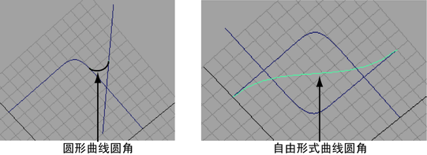
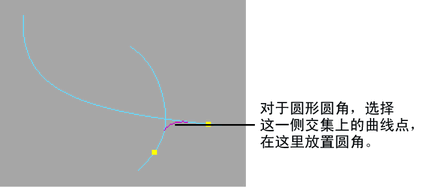

可以创建圆形或自由形式圆角。自由形式圆角提供更多的位置和形状控制。

在两条曲线之间创建圆形圆角曲线
- 在每条曲线上选择希望圆角开始和结束的曲线点。（为圆角输入的半径将确定实际的开始点和结束点。）

- 选择“曲线 > 圆角”(Curves > Fillet) >
 。
。
- 单击“圆形”(Circular)，然后为圆角输入“半径”(Radius)。
- 若要将曲线修剪回圆角结束点，请启用“修剪”(Trim)。启用“修剪”(Trim)时，也可以启用“接合”(Join)以将曲线接合在一起，形成一条新曲线。
- 单击“应用”(Apply)。
在两条曲线之间创建自由形式圆角曲线
- 在每条曲线上选择一个曲线点以指定圆角的开始点和结束点。
- 选择“曲线 > 圆角”(Curves > Fillet) > 。
- 单击“自由形式”(Freeform)。
- 若要将曲线修剪回圆角结束点，请启用“修剪”(Trim)。启用“修剪”(Trim)时，也可以启用“接合”(Join)以将曲线接合在一起，形成一条新曲线。
- 单击“应用”(Apply)。
注： 不能使用曲面上的曲线创建圆角。
如果 Maya 不创建圆角曲线，可能是因为您输入的半径值无法用于圆角。请尝试一个不同的值，然后再次单击“应用”(Apply)。或者，您可以尝试重新定形曲线，使其相交，然后重做圆角操作。